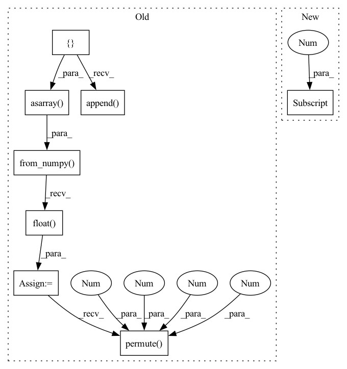

Pattern ID :35904
Before Change
potentially downsampled heatmaps e.g., (96, 96)
label_heatmaps = []
for idx in range(len(self.image_names)):
example_dict: BaseExampleDict = super().__getitem__(idx)
// super().__getitem__ returns flat keypoints, reshape to
// (num_keypoints, 2)
y_heatmap = draw_keypoints(
example_dict["keypoints"].numpy().reshape(self.num_keypoints, 2),
example_dict["images"].shape[-2],
example_dict["images"].shape[-1],
self.output_shape,
sigma=self.output_sigma,
)
assert y_heatmap.shape == (*self.output_shape, self.num_keypoints)
label_heatmaps.append( y_heatmap)
self.label_heatmaps = torch.from_numpy(np.asarray(label_heatmaps)).float()
self.label_heatmaps = self.label_heatmaps.permute(0 , 3 , 1 , 2 )
@typechecked
def __getitem__(self, idx: int) -> HeatmapExampleDict:
Get an example from the dataset.After Change
sigma=self.output_sigma
)
assert y_heatmap.shape == (1, self.num_keypoints, *self.output_shape)
label_heatmaps[idx] = y_heatmap[0]
self.label_heatmaps = label_heatmaps
In pattern: SUPERPATTERN
Frequency: 3
Non-data size: 8
Instances Fragment ID: 101947283
Project Name: danbider/lightning-pose
Commit Name: 749b5836567981f339c2368e698b3c17358ac12f
Time: 2021-12-02
Author: nicholasg101@gmail.com
File Name: pose_est_nets/datasets/datasets.py
M Class Name: HeatmapDataset
N Class Name: HeatmapDataset
M Method Name: compute_heatmaps(1)
N Method Name: compute_heatmaps(1)
M Parent Class: BaseTrackingDataset
N Parent Class: BaseTrackingDataset
M File Name: pose_est_nets/datasets/datasets.py
N File Name: pose_est_nets/datasets/datasets.py
M Start Line: 258
M End Line: 274
N Start Line: 259
N End Line: 292
Before Change
])
// Compute heatmaps as preprocessing step
label_heatmaps = []
for idx, y in enumerate(tqdm(self.labels)):
x = Image.open(os.path.join(root_directory, self.image_names[idx])).convert(
"RGB" //didn"t do this for DLC
) // Rick"s images have 1 color channel; change to 3.
if transform:
x, y = transform(images = np.expand_dims(x, axis = 0), keypoints = np.expand_dims(y, axis = 0)) //check transform and normalization
x = x.squeeze(0)
y = y.squeeze(0)
x = self.torch_transform(x)
y_heatmap = draw_keypoints(y, x.shape[-2], x.shape[-1], self.output_shape, sigma = 5)
label_heatmaps.append( y_heatmap)
self.label_heatmaps = torch.from_numpy(np.asarray(label_heatmaps)).float()
self.label_heatmaps = self.label_heatmaps.permute(0 , 3 , 1 , 2 )
//check that nan keypoints are producing heatmaps of zeros
//check that max of heatmaps look good
self.transform = transform
self.root_directory = root_directoryAfter Change
// Compute heatmaps as preprocessing step
//check that max of heatmaps look good
self.compute_heatmaps()
self.num_targets = self.labels[0].shape[0]
print(self.num_targets)
def compute_heatmaps(self):
label_heatmaps = [] Fragment ID: 101947282
Project Name: danbider/lightning-pose
Commit Name: 545a2f0293f923aca78924357ba161baf71f2982
Time: 2021-07-15
Author: ubuntu@ip-172-31-72-121.ec2.internal
File Name: pose_est_nets/datasets/datasets.py
M Class Name: DLCHeatmapDataset
N Class Name: DLCHeatmapDataset
M Method Name: __init__(5)
N Method Name: __init__(5)
M Parent Class: torch.utils.data.Dataset
N Parent Class: torch.utils.data.Dataset
M File Name: pose_est_nets/datasets/datasets.py
N File Name: pose_est_nets/datasets/datasets.py
M Start Line: 80
M End Line: 137
N Start Line: 80
N End Line: 114
Before Change
potentially downsampled heatmaps e.g., (96, 96)
label_heatmaps = []
for idx in range(len(self.image_names)):
example_dict: BaseExampleDict = super().__getitem__(idx)
// super().__getitem__ returns flat keypoints, reshape to
// (num_keypoints, 2)
y_heatmap = draw_keypoints(
example_dict["keypoints"].numpy().reshape(self.num_keypoints, 2),
example_dict["images"].shape[-2],
example_dict["images"].shape[-1],
self.output_shape,
sigma=self.output_sigma,
)
assert y_heatmap.shape == (*self.output_shape, self.num_keypoints)
label_heatmaps.append( y_heatmap)
self.label_heatmaps = torch.from_numpy(np.asarray(label_heatmaps)).float()
self.label_heatmaps = self.label_heatmaps.permute(0 , 3 , 1 , 2 )
@typechecked
def __getitem__(self, idx: int) -> HeatmapExampleDict:
Get an example from the dataset.After Change
sigma=self.output_sigma
)
assert y_heatmap.shape == (1, self.num_keypoints, *self.output_shape)
label_heatmaps[idx] = y_heatmap[0]
self.label_heatmaps = label_heatmaps
Fragment ID: 101947281
Project Name: danbider/lightning-pose
Commit Name: 5d465d1e196cb4047ae50344297b460b26baaea3
Time: 2021-12-02
Author: nicholasg101@gmail.com
File Name: pose_est_nets/datasets/datasets.py
M Class Name: HeatmapDataset
N Class Name: HeatmapDataset
M Method Name: compute_heatmaps(1)
N Method Name: compute_heatmaps(1)
M Parent Class: BaseTrackingDataset
N Parent Class: BaseTrackingDataset
M File Name: pose_est_nets/datasets/datasets.py
N File Name: pose_est_nets/datasets/datasets.py
M Start Line: 258
M End Line: 274
N Start Line: 259
N End Line: 292